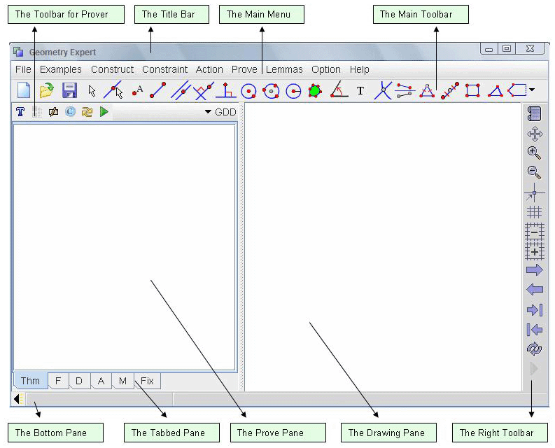

1. The Title Bar
The title bar locates at the top of the window. It shows the name of the software. If a file is loaded, it shows the file name as well.
2. The Main Menu
The main menu of JGEX contains almost all the action of the program.
3. The Toolbar for Prover
The toolbar for the prover contains some common used action for the prover.
4. The Main Toolbar
The main toolbar contains some commonly used actions for drawing.
5. The Right Toolbar
The right toolbar contains some actions to manipulate the diagram.
6. The Prove Pane
The prove pane is for creating and viewing proofs.
7. The Tabbed Button
The tabbed button let the user can switch between different pane.
8. The Drawing Pane
The drawing pane is the pane for drawing and viewing the diagram.
9. The Bottom Pane.
The bottom pane is used for providing some useful information for the user.
JGEX Help